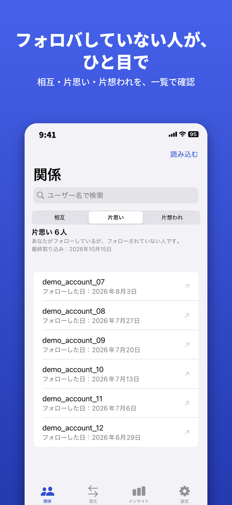
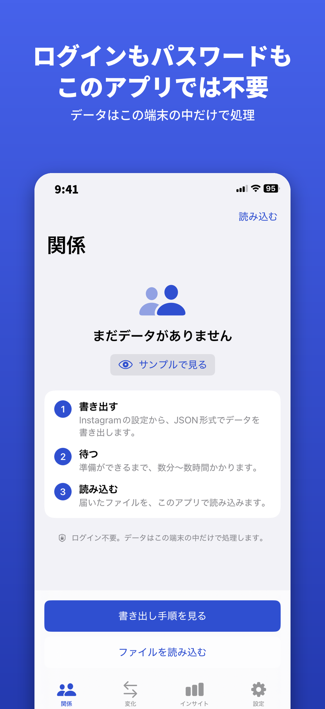
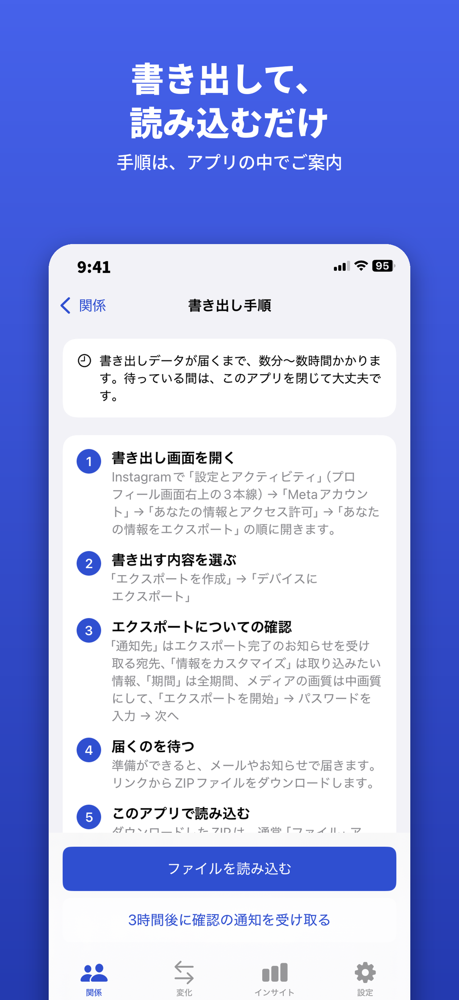

フォロー関係を、もっと分かりやすく。
フォロー・フォロワーを整理して、相互フォローを確認するためのアプリです。
フォロー状況を確認し、アカウント管理をサポートします。
フォロー・フォロワーの情報を整理して、 アカウントのつながりを確認できます。
お互いにフォローしているアカウントを確認し、 フォロー関係を把握するのに役立ちます。
フォロー関係を整理して、 SNSのアカウント管理をしやすくします。
フォロー状況や相互フォローの確認画面をご紹介します。



SNSのつながりを整理して、もっと見やすく。
App Storeで見る →